01
Air Quality Analysis
Aerosol loading, PM₂.₅, pollution episodes, meteorological controls, event-based analysis, and observational interpretation.
I am an air quality scientist specializing in satellite remote sensing and the spatial and temporal analysis of large observational datasets. My work integrates satellite-borne, surface-based, and meteorological observations to understand aerosol variability, air-pollution processes, and environmental change.
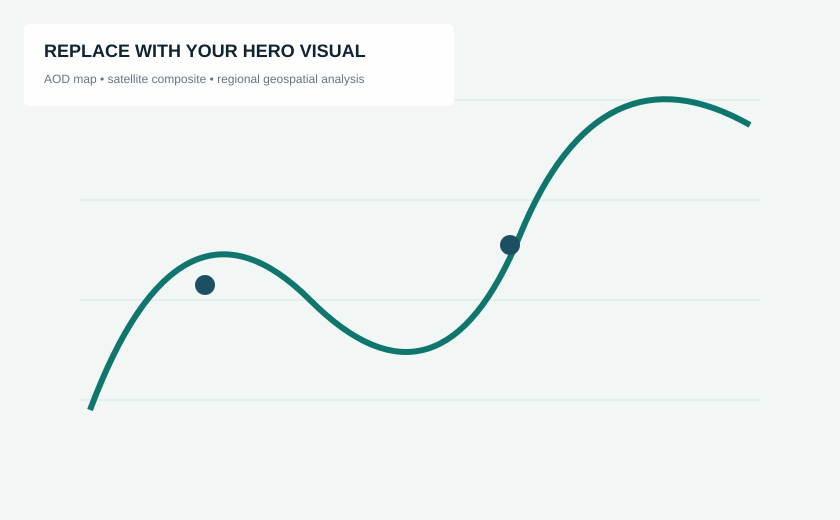
My research sits at the intersection of air quality, satellite remote sensing, atmospheric observations, and environmental data science. I work with large, heterogeneous datasets to quantify how aerosols and related atmospheric processes vary across space, time, and meteorological regimes.
I am particularly interested in problems where remote sensing can extend sparse surface observations, where careful validation is essential, and where high-quality visual analytics can turn complex environmental data into evidence that supports scientific, operational, or policy decisions.
Aerosol loading, PM₂.₅, pollution episodes, meteorological controls, event-based analysis, and observational interpretation.
VIIRS, MODIS, MAIAC, AERONET and related products; satellite–ground collocation, validation, bias diagnostics, and retrieval evaluation.
Geospatial pattern analysis, multi-year time series, anomaly methods, event composites, regime stratification, and change detection.
Python workflows for satellite, surface, lidar, meteorological, and sensor datasets using NumPy, pandas, xarray, SciPy, and PySpark.
Each project shows the question, data architecture, analysis, and the insight produced.
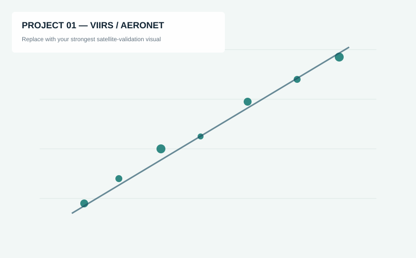
Tested how reliably satellite-retrieved aerosol optical depth represents surface-observed aerosol conditions over dryland environments, with emphasis on meteorology-dependent performance.
VIIRS Deep Blue AOD, AERONET, vegetation/surface variables, meteorological regime classifications
Satellite–ground collocation, regression, RMSE, expected-error analysis, bias diagnostics, regime stratification
Identified when aggregate validation metrics mask regime-dependent retrieval behavior — useful for defensible use of EO data in air-quality applications.
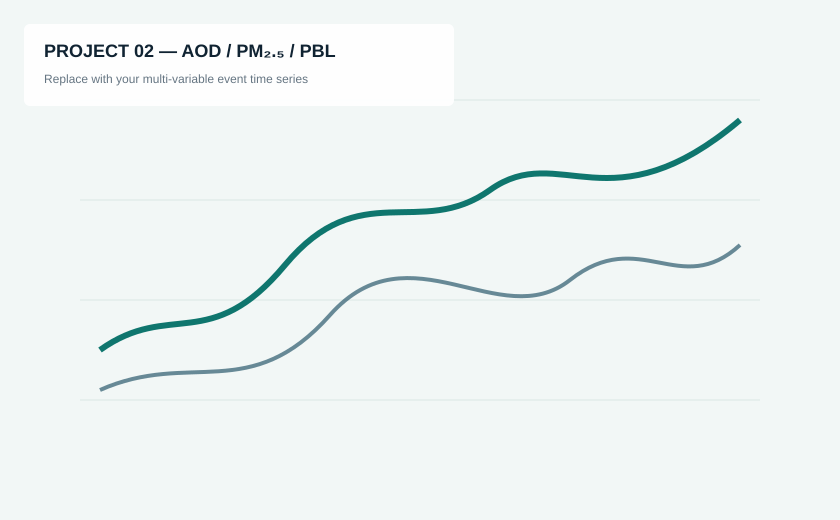
Integrated ground-based remote sensing, surface particulate measurements, lidar, and meteorology to investigate why column aerosol and surface PM do not always change together during dryline passages.
AERONET spectral AOD, BAM PM₂.₅, Doppler lidar mixing-layer diagnostics, surface meteorology
Event alignment, before/after composites, multi-variable time-series analysis, vertical-context interpretation
Demonstrates how combining vertically integrated and surface observations avoids simplistic interpretation of air-pollution episodes.
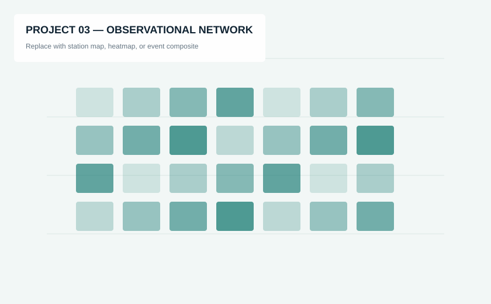
Analyzed multi-year soil-moisture and temperature observations across dozens of stations to isolate seasonal coupling behavior and the role of atmospheric moisture demand and rainfall.
Five years of high-frequency surface observations across 66 stations with precipitation and atmospheric variables
Anomalies, seasonal stratification, VPD dependence, rain-event composites, quality filters, spatial comparisons
Shows transferable skill in extracting robust signals from noisy, high-volume environmental monitoring networks.
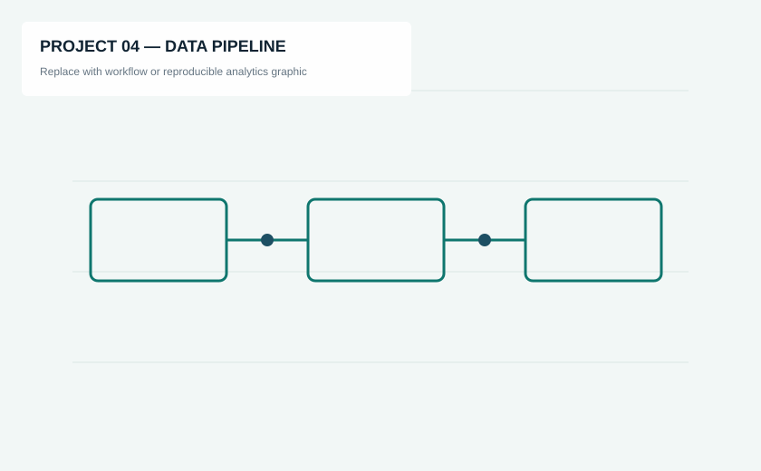
Developed Python-based workflows to harmonize satellite, lidar, in-situ particulate, meteorological, and geospatial datasets for analysis at multiple spatial and temporal scales.
Satellite retrievals, PM observations, lidar, station networks, land cover, reanalysis and meteorological data
Ingestion, cleaning, temporal matching, spatial collocation, QA/QC, derived variables, repeatable visualization
Bridges research-grade atmospheric data handling with the repeatability expected in applied geospatial and environmental analytics.
Replace each placeholder below with one of your strongest figures. Keep the filenames and the site updates automatically.
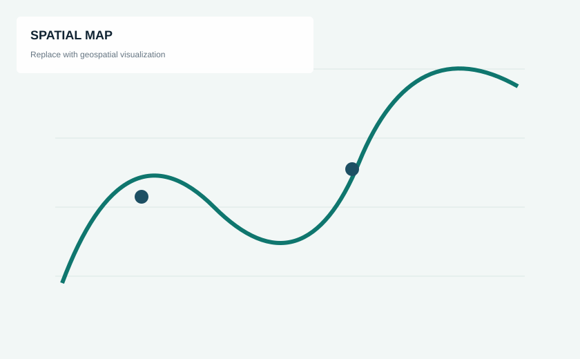
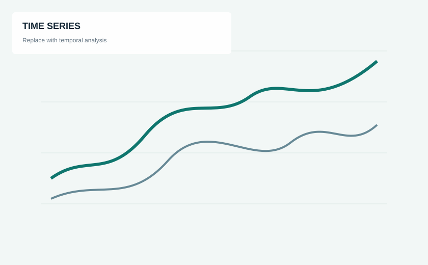
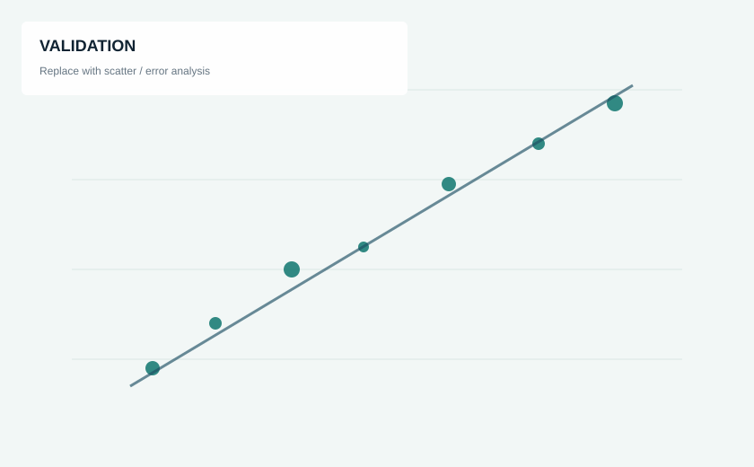
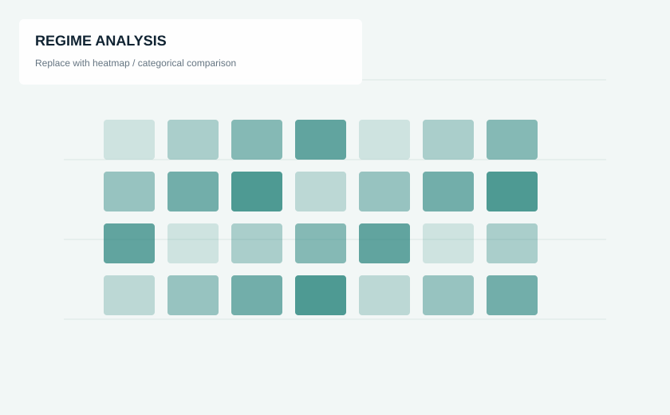
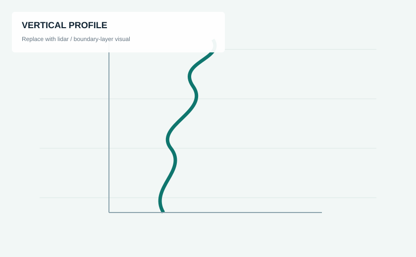
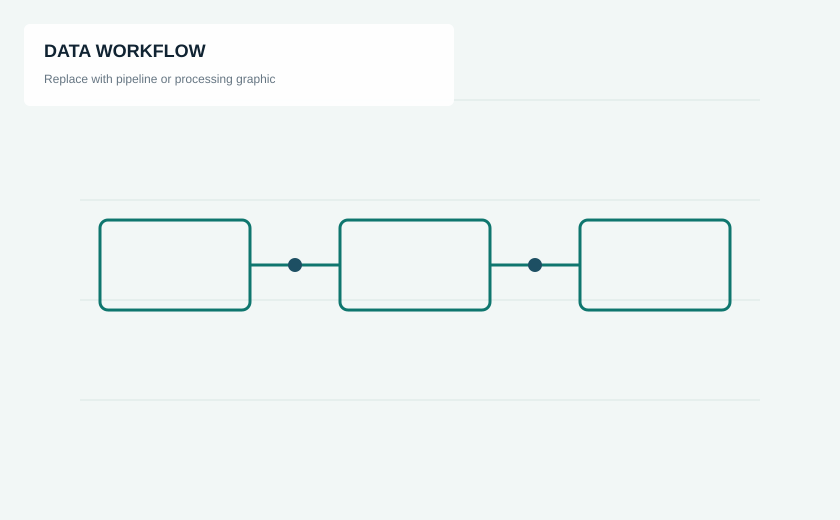
Python · NumPy · pandas · xarray · SciPy · PySpark · Bash · C++ · NetCDF · HPC
Cartopy · QGIS · ArcGIS · ENVI · spatial collocation · raster/vector workflows · mapping
VIIRS · MODIS · MAIAC · AERONET · COSMIC · NASA Worldview · Giovanni
PM sensors · Doppler lidar · radiosondes · Mesonet · ASOS/AWOS · sun photometry · field QA/QC
Atmospheric Research · Satellite remote sensing · Aerosol optical depth · Retrieval validation
Add paper link →Land–atmosphere interactions · Multi-year station observations · Environmental statistics
Add paper link →Add 2–4 more selected publications only. Keep the complete publication list in your CV or Google Scholar profile.